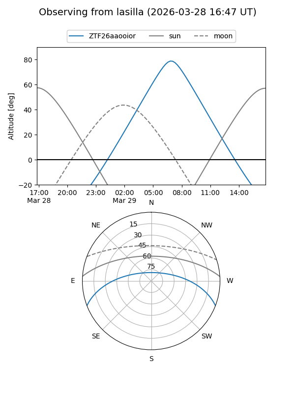
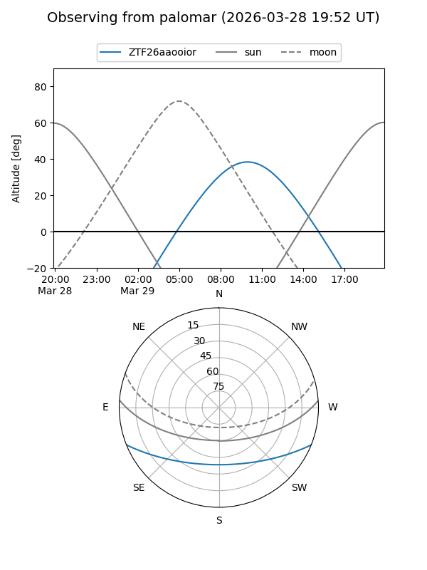

ZTF26aaooior
Target ZTF26aaooior at 2026-03-29 09:41
Aliases and brokers:
FINK: link
Lasair: link
ALeRCE: link
alt names
ZTF26aaooior (ztf,fink_ztf)
Coordinates:
equatorial (ra, dec) = 218.9515,-18.09615
equatorial (HMS+DMS) = 14:35:48.35,-18:05:46.16
galactic (l, b) = (335.0607,+38.17888)
Flags:
Photometry:
last ztfg=16.81
1 ztfg detections
Lightcurve
Visibility


Additional plots